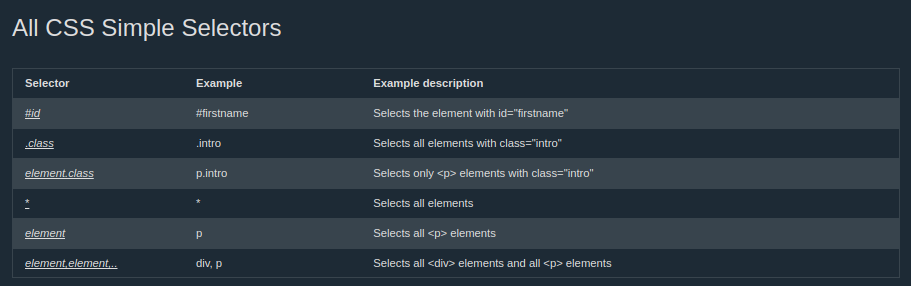

Selector CSS
A CSS selector selects the HTML element(s) you want to style.
Source
CSS Selectors
Digunakan untuk memilih HTML element yang akan diberikan style
- Simple selectors yang paling basic adalah id dan class
- Combinator selectors memilih element dari spesific relationship diantara mereka
- Pseudo-class selector memilih elemen berdasarkan keadaan tertentu
- Pseudo-elements selectors memilih dan memberi style dari sebuah element
- Attribute selectors memilih elements dari attribute atau attribute value
Simple selectors
